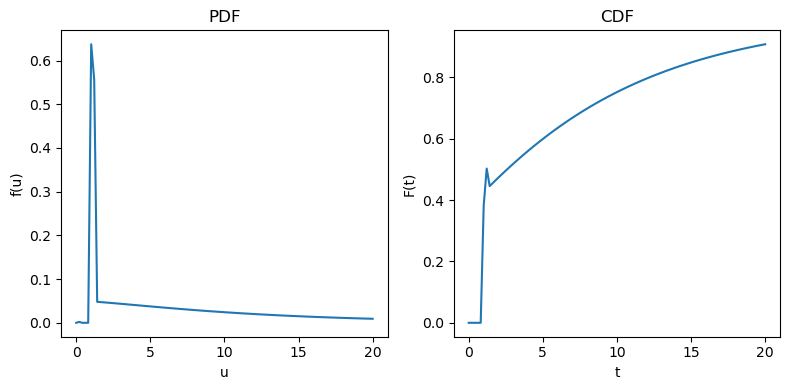
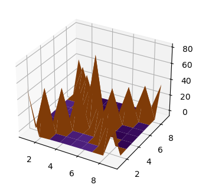
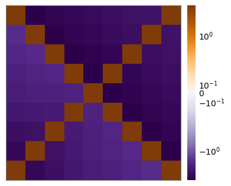

Basic statistics and spectra
To begin, we configure a coalescent object from which can easily access all available statistics. In this example we specify 10 lineages and a 4-epoch piecewise-constant demography.
import phasegen as pg
# construct coalescent object
coal = pg.PiecewiseTimeHomogeneousCoalescent(
n=10,
demography=pg.PiecewiseTimeHomogeneousDemography(
pop_sizes=[1.2, 10, 0.8, 10],
times=[0, 0.3, 1, 1.4]
)
)
We can now access basic properties like the mean tree height and the variance in total branch length. These are computed on the fly and cached for later use.
coal.tree_height.mean
11.436822782034213
coal.total_branch_length.var
505.12890597436456
For the tree height, probability distributions are available, which can readily be visualized.
from matplotlib import pyplot as plt
_, axs = plt.subplots(ncols=2, figsize=(8, 4))
coal.tree_height.plot_pdf(ax=axs[0], show=False)
coal.tree_height.plot_cdf(ax=axs[1]);

We can also obtain the expected site-frequency spectrum.
coal.sfs.mean.plot();
<Figure size 512x384 with 0 Axes>
We can also access the 2-SFS which is a covariance matrix of the frequency counts. The entries of the main diagonal denote the variance of the SFS.
coal.sfs.cov.plot();

Alternatively, we can plot the 2-SFS as a heatmap.
coal.sfs.cov.plot_heatmap();
